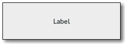

Gtk.Label
Example
| Subclasses: | Gtk.AccelLabel |
|---|
Methods
| Inherited: | Gtk.Misc (4), Gtk.Widget (256), GObject.Object (33), Gtk.Buildable (10) |
|---|
| static | new(str) |
| static | new_with_mnemonic(str) |
| get_angle() | |
| get_attributes() | |
| get_current_uri() | |
| get_ellipsize() | |
| get_justify() | |
| get_label() | |
| get_layout() | |
| get_layout_offsets() | |
| get_line_wrap() | |
| get_line_wrap_mode() | |
| get_lines() | |
| get_max_width_chars() | |
| get_mnemonic_keyval() | |
| get_mnemonic_widget() | |
| get_selectable() | |
| get_selection_bounds() | |
| get_single_line_mode() | |
| get_text() | |
| get_track_visited_links() | |
| get_use_markup() | |
| get_use_underline() | |
| get_width_chars() | |
| select_region(start_offset, end_offset) | |
| set_angle(angle) | |
| set_attributes(attrs) | |
| set_ellipsize(mode) | |
| set_justify(jtype) | |
| set_label(str) | |
| set_line_wrap(wrap) | |
| set_line_wrap_mode(wrap_mode) | |
| set_lines(lines) | |
| set_markup(str) | |
| set_markup_with_mnemonic(str) | |
| set_max_width_chars(n_chars) | |
| set_mnemonic_widget(widget) | |
| set_pattern(pattern) | |
| set_selectable(setting) | |
| set_single_line_mode(single_line_mode) | |
| set_text(str) | |
| set_text_with_mnemonic(str) | |
| set_track_visited_links(track_links) | |
| set_use_markup(setting) | |
| set_use_underline(setting) | |
| set_width_chars(n_chars) |
Virtual Methods
| Inherited: | Gtk.Widget (82), GObject.Object (7), Gtk.Buildable (10) |
|---|
| do_activate_link(uri) | |
| do_copy_clipboard() | |
| do_move_cursor(step, count, extend_selection) | |
| do_populate_popup(menu) |
Properties
| Inherited: | Gtk.Misc (4), Gtk.Widget (38) |
|---|
| Name | Type | Flags | Short Description |
|---|---|---|---|
| angle | float | r/w | Angle at which the label is rotated |
| attributes | Pango.AttrList | r/w | A list of style attributes to apply to the text of the label |
| cursor-position | int | r | The current position of the insertion cursor in chars |
| ellipsize | Pango.EllipsizeMode | r/w | The preferred place to ellipsize the string, if the label does not have enough room to display the entire string |
| justify | Gtk.Justification | r/w | The alignment of the lines in the text of the label relative to each other. This does NOT affect the alignment of the label within its allocation. See Gtk.Misc ::xalign for that |
| label | str | r/w | The text of the label |
| lines | int | r/w | The desired number of lines, when ellipsizing a wrapping label |
| max-width-chars | int | r/w | The desired maximum width of the label, in characters |
| mnemonic-keyval | int | r | The mnemonic accelerator key for this label |
| mnemonic-widget | Gtk.Widget | r/w | The widget to be activated when the label’s mnemonic key is pressed |
| pattern | str | w | A string with _ characters in positions correspond to characters in the text to underline |
| selectable | bool | r/w | Whether the label text can be selected with the mouse |
| selection-bound | int | r | The position of the opposite end of the selection from the cursor in chars |
| single-line-mode | bool | r/w | Whether the label is in single line mode |
| track-visited-links | bool | r/w | Whether visited links should be tracked |
| use-markup | bool | r/w | The text of the label includes XML markup. See Pango.parse_markup () |
| use-underline | bool | r/w | If set, an underline in the text indicates the next character should be used for the mnemonic accelerator key |
| width-chars | int | r/w | The desired width of the label, in characters |
| wrap | bool | r/w | If set, wrap lines if the text becomes too wide |
| wrap-mode | Pango.WrapMode | r/w | If wrap is set, controls how linewrapping is done |
Style Properties
| Inherited: | Gtk.Widget (17) |
|---|
Signals
| Inherited: | Gtk.Widget (69), GObject.Object (1) |
|---|
| Name | Short Description |
|---|---|
| activate-current-link | A [keybinding signal][GtkBindingSignal] which gets emitted when the user activates a link in the label. |
| activate-link | The signal which gets emitted to activate a URI. |
| copy-clipboard | The ::copy-clipboard signal is a [keybinding signal][GtkBindingSignal] which gets emitted to copy the selection to the clipboard. |
| move-cursor | The ::move-cursor signal is a [keybinding signal][GtkBindingSignal] which gets emitted when the user initiates a cursor movement. |
| populate-popup | The ::populate-popup signal gets emitted before showing the context menu of the label. |
Fields
| Inherited: | Gtk.Misc (1), Gtk.Widget (1), GObject.InitiallyUnowned (3), GObject.Object (3) |
|---|
| Name | Type | Access | Description |
|---|---|---|---|
| misc | Gtk.Misc | r |
Class Details
- class Gtk.Label(label=None, **kwds)
Bases: Gtk.Misc
The Gtk.Label widget displays a small amount of text. As the name implies, most labels are used to label another widget such as a Gtk.Button, a Gtk.MenuItem, or a Gtk.ComboBox.
# Gtk.Label as Gtk.Buildable
The Gtk.Label implementation of the Gtk.Buildable interface supports a custom element, which supports any number of elements. The element has attributes named “name“, “value“, “start“ and “end“ and allows you to specify Pango.Attribute values for this label.
An example of a UI definition fragment specifying Pango attributes:
<object class="GtkLabel"> <attributes> <attribute name="weight" value="PANGO_WEIGHT_BOLD"/> <attribute name="background" value="red" start="5" end="10"/>" </attributes> </object>
The start and end attributes specify the range of characters to which the Pango attribute applies. If start and end are not specified, the attribute is applied to the whole text. Note that specifying ranges does not make much sense with translatable attributes. Use markup embedded in the translatable content instead.
# Mnemonics
Labels may contain “mnemonics”. Mnemonics are underlined characters in the label, used for keyboard navigation. Mnemonics are created by providing a string with an underscore before the mnemonic character, such as `”_File”`, to the functions Gtk.Label.new_with_mnemonic () or Gtk.Label.set_text_with_mnemonic ().
Mnemonics automatically activate any activatable widget the label is inside, such as a Gtk.Button ; if the label is not inside the mnemonic’s target widget, you have to tell the label about the target using Gtk.Label.set_mnemonic_widget (). Here’s a simple example where the label is inside a button:
<!-- language="C" --> // Pressing Alt+H will activate this button button = gtk_button_new (); label = gtk_label_new_with_mnemonic ("_Hello"); gtk_container_add (GTK_CONTAINER (button), label);
There’s a convenience function to create buttons with a mnemonic label already inside:
<!-- language="C" --> // Pressing Alt+H will activate this button button = gtk_button_new_with_mnemonic ("_Hello");
To create a mnemonic for a widget alongside the label, such as a Gtk.Entry, you have to point the label at the entry with Gtk.Label.set_mnemonic_widget ():
<!-- language="C" --> // Pressing Alt+H will focus the entry entry = gtk_entry_new (); label = gtk_label_new_with_mnemonic ("_Hello"); gtk_label_set_mnemonic_widget (GTK_LABEL (label), entry);
# Markup (styled text)
To make it easy to format text in a label (changing colors, fonts, etc.), label text can be provided in a simple [markup format][PangoMarkupFormat].
Here’s how to create a label with a small font:
<!-- language="C" --> label = gtk_label_new (NULL); gtk_label_set_markup (GTK_LABEL (label), "<small>Small text</small>");
(See [complete documentation][PangoMarkupFormat] of available tags in the Pango manual.)
The markup passed to Gtk.Label.set_markup () must be valid; for example, literal <, > and & characters must be escaped as <, >, and &. If you pass text obtained from the user, file, or a network to Gtk.Label.set_markup (), you’ll want to escape it with GLib.markup_escape_text () or GLib.markup_printf_escaped ().
Markup strings are just a convenient way to set the Pango.AttrList on a label; Gtk.Label.set_attributes () may be a simpler way to set attributes in some cases. Be careful though; Pango.AttrList tends to cause internationalization problems, unless you’re applying attributes to the entire string (i.e. unless you set the range of each attribute to [0, GObject.G_MAXINT )). The reason is that specifying the start_index and end_index for a Pango.Attribute requires knowledge of the exact string being displayed, so translations will cause problems.
# Selectable labels
Labels can be made selectable with Gtk.Label.set_selectable (). Selectable labels allow the user to copy the label contents to the clipboard. Only labels that contain useful-to-copy information — such as error messages — should be made selectable.
# Text layout # {#label-text-layout}
A label can contain any number of paragraphs, but will have performance problems if it contains more than a small number. Paragraphs are separated by newlines or other paragraph separators understood by Pango.
Labels can automatically wrap text if you call Gtk.Label.set_line_wrap ().
Gtk.Label.set_justify () sets how the lines in a label align with one another. If you want to set how the label as a whole aligns in its available space, see the Gtk.Widget ::halign and Gtk.Widget :valign properties.
The Gtk.Label :width-chars and Gtk.Label :max-width-chars properties can be used to control the size allocation of ellipsized or wrapped labels. For ellipsizing labels, if either is specified (and less than the actual text size), it is used as the minimum width, and the actual text size is used as the natural width of the label. For wrapping labels, width-chars is used as the minimum width, if specified, and max-width-chars is used as the natural width. Even if max-width-chars specified, wrapping labels will be rewrapped to use all of the available width.
Note that the interpretation of Gtk.Label :width-chars and Gtk.Label :max-width-chars has changed a bit with the introduction of [width-for-height geometry management.][geometry-management]
# Links
Since 2.18, GTK+ supports markup for clickable hyperlinks in addition to regular Pango markup. The markup for links is borrowed from HTML, using the ` ` with “href“ and “title“ attributes. GTK+ renders links similar to the way they appear in web browsers, with colored, underlined text. The “title“ attribute is displayed as a tooltip on the link.
An example looks like this:
<!-- language="C" --> const gchar *text = "Go to the" "<a href=\"http://www.gtk.org title="<i>Our</i> website\">" "GTK+ website</a> for more..."; gtk_label_set_markup (label, text);
It is possible to implement custom handling for links and their tooltips with the Gtk.Label ::activate-link signal and the Gtk.Label.get_current_uri () function.
- static new(str)
Parameters: str (str or None) – The text of the label Returns: the new Gtk.Label Return type: Gtk.Widget Creates a new label with the given text inside it. You can pass None to get an empty label widget.
- static new_with_mnemonic(str)
Parameters: str (str or None) – The text of the label, with an underscore in front of the mnemonic character Returns: the new Gtk.Label Return type: Gtk.Widget Creates a new Gtk.Label, containing the text in str.
If characters in str are preceded by an underscore, they are underlined. If you need a literal underscore character in a label, use ‘__’ (two underscores). The first underlined character represents a keyboard accelerator called a mnemonic. The mnemonic key can be used to activate another widget, chosen automatically, or explicitly using Gtk.Label.set_mnemonic_widget ().
If Gtk.Label.set_mnemonic_widget () is not called, then the first activatable ancestor of the Gtk.Label will be chosen as the mnemonic widget. For instance, if the label is inside a button or menu item, the button or menu item will automatically become the mnemonic widget and be activated by the mnemonic.
- get_angle()
Returns: the angle of rotation for the label Return type: float Gets the angle of rotation for the label. See Gtk.Label.set_angle ().
New in version 2.6.
- get_attributes()
Returns: the attribute list, or None if none was set. Return type: Pango.AttrList Gets the attribute list that was set on the label using Gtk.Label.set_attributes (), if any. This function does not reflect attributes that come from the labels markup (see Gtk.Label.set_markup ()). If you want to get the effective attributes for the label, use pango_layout_get_attribute (Gtk.Label.get_layout (label)).
- get_current_uri()
Returns: the currently active URI. The string is owned by GTK+ and must not be freed or modified. Return type: str Returns the URI for the currently active link in the label. The active link is the one under the mouse pointer or, in a selectable label, the link in which the text cursor is currently positioned.
This function is intended for use in a Gtk.Label ::activate-link handler or for use in a Gtk.Widget ::query-tooltip handler.
New in version 2.18.
- get_ellipsize()
Returns: Pango.EllipsizeMode Return type: Pango.EllipsizeMode Returns the ellipsizing position of the label. See Gtk.Label.set_ellipsize ().
New in version 2.6.
- get_justify()
Returns: Gtk.Justification Return type: Gtk.Justification Returns the justification of the label. See Gtk.Label.set_justify ().
- get_label()
Returns: the text of the label widget. This string is owned by the widget and must not be modified or freed. Return type: str Fetches the text from a label widget including any embedded underlines indicating mnemonics and Pango markup. (See Gtk.Label.get_text ()).
- get_layout()
Returns: the Pango.Layout for this label Return type: Pango.Layout Gets the Pango.Layout used to display the label. The layout is useful to e.g. convert text positions to pixel positions, in combination with Gtk.Label.get_layout_offsets (). The returned layout is owned by the label so need not be freed by the caller. The label is free to recreate its layout at any time, so it should be considered read-only.
- get_layout_offsets()
Returns: x: location to store X offset of layout, or None y: location to store Y offset of layout, or None Return type: (x: int, y: int) Obtains the coordinates where the label will draw the Pango.Layout representing the text in the label; useful to convert mouse events into coordinates inside the Pango.Layout, e.g. to take some action if some part of the label is clicked. Of course you will need to create a Gtk.EventBox to receive the events, and pack the label inside it, since labels are a #GTK_NO_WINDOW widget. Remember when using the Pango.Layout functions you need to convert to and from pixels using PANGO_PIXELS() or Pango.SCALE.
- get_line_wrap()
Returns: True if the lines of the label are automatically wrapped. Return type: bool Returns whether lines in the label are automatically wrapped. See Gtk.Label.set_line_wrap ().
- get_line_wrap_mode()
Returns: True if the lines of the label are automatically wrapped. Return type: Pango.WrapMode Returns line wrap mode used by the label. See Gtk.Label.set_line_wrap_mode ().
New in version 2.10.
- get_lines()
Returns: The number of lines Return type: int Gets the number of lines to which an ellipsized, wrapping label should be limited. See Gtk.Label.set_lines ().
New in version 3.10.
- get_max_width_chars()
Returns: the maximum width of the label in characters. Return type: int Retrieves the desired maximum width of label, in characters. See Gtk.Label.set_width_chars ().
New in version 2.6.
- get_mnemonic_keyval()
Returns: GDK keyval usable for accelerators, or Gdk.KEY_VoidSymbol Return type: int If the label has been set so that it has an mnemonic key this function returns the keyval used for the mnemonic accelerator. If there is no mnemonic set up it returns Gdk.KEY_VoidSymbol.
- get_mnemonic_widget()
Returns: the target of the label’s mnemonic, or None if none has been set and the default algorithm will be used. Return type: Gtk.Widget Retrieves the target of the mnemonic (keyboard shortcut) of this label. See Gtk.Label.set_mnemonic_widget ().
- get_selectable()
Returns: True if the user can copy text from the label Return type: bool Gets the value set by Gtk.Label.set_selectable ().
- get_selection_bounds()
Returns: True if selection is non-empty start: return location for start of selection, as a character offset end: return location for end of selection, as a character offset Return type: (bool, start: int, end: int) Gets the selected range of characters in the label, returning True if there’s a selection.
- get_single_line_mode()
Returns: True when the label is in single line mode. Return type: bool Returns whether the label is in single line mode.
New in version 2.6.
- get_text()
Returns: the text in the label widget. This is the internal string used by the label, and must not be modified. Return type: str Fetches the text from a label widget, as displayed on the screen. This does not include any embedded underlines indicating mnemonics or Pango markup. (See Gtk.Label.get_label ())
- get_track_visited_links()
Returns: True if clicked links are remembered Return type: bool Returns whether the label is currently keeping track of clicked links.
New in version 2.18.
- get_use_markup()
Returns: True if the label’s text will be parsed for markup. Return type: bool Returns whether the label’s text is interpreted as marked up with the [Pango text markup language][PangoMarkupFormat]. See Gtk.Label.set_use_markup ().
- get_use_underline()
Returns: True whether an embedded underline in the label indicates the mnemonic accelerator keys. Return type: bool Returns whether an embedded underline in the label indicates a mnemonic. See Gtk.Label.set_use_underline ().
- get_width_chars()
Returns: the width of the label in characters. Return type: int Retrieves the desired width of label, in characters. See Gtk.Label.set_width_chars ().
New in version 2.6.
- select_region(start_offset, end_offset)
Parameters: Selects a range of characters in the label, if the label is selectable. See Gtk.Label.set_selectable (). If the label is not selectable, this function has no effect. If start_offset or end_offset are -1, then the end of the label will be substituted.
- set_angle(angle)
Parameters: angle (float) – the angle that the baseline of the label makes with the horizontal, in degrees, measured counterclockwise Sets the angle of rotation for the label. An angle of 90 reads from from bottom to top, an angle of 270, from top to bottom. The angle setting for the label is ignored if the label is selectable, wrapped, or ellipsized.
New in version 2.6.
- set_attributes(attrs)
Parameters: attrs (Pango.AttrList) – a Pango.AttrList Sets a Pango.AttrList ; the attributes in the list are applied to the label text.
The attributes set with this function will be applied and merged with any other attributes previously effected by way of the Gtk.Label :use-underline or Gtk.Label :use-markup properties. While it is not recommended to mix markup strings with manually set attributes, if you must; know that the attributes will be applied to the label after the markup string is parsed.
- set_ellipsize(mode)
Parameters: mode (Pango.EllipsizeMode) – a Pango.EllipsizeMode Sets the mode used to ellipsize (add an ellipsis: ”...”) to the text if there is not enough space to render the entire string.
New in version 2.6.
- set_justify(jtype)
Parameters: jtype (Gtk.Justification) – a Gtk.Justification Sets the alignment of the lines in the text of the label relative to each other. Gtk.Justification.LEFT is the default value when the widget is first created with Gtk.Label.new (). If you instead want to set the alignment of the label as a whole, use Gtk.Widget.set_halign () instead. Gtk.Label.set_justify () has no effect on labels containing only a single line.
- set_label(str)
Parameters: str (str) – the new text to set for the label Sets the text of the label. The label is interpreted as including embedded underlines and/or Pango markup depending on the values of the Gtk.Label :use-underline ” and Gtk.Label :use-markup properties.
- set_line_wrap(wrap)
Parameters: wrap (bool) – the setting Toggles line wrapping within the Gtk.Label widget. True makes it break lines if text exceeds the widget’s size. False lets the text get cut off by the edge of the widget if it exceeds the widget size.
Note that setting line wrapping to True does not make the label wrap at its parent container’s width, because GTK+ widgets conceptually can’t make their requisition depend on the parent container’s size. For a label that wraps at a specific position, set the label’s width using Gtk.Widget.set_size_request ().
- set_line_wrap_mode(wrap_mode)
Parameters: wrap_mode (Pango.WrapMode) – the line wrapping mode If line wrapping is on (see Gtk.Label.set_line_wrap ()) this controls how the line wrapping is done. The default is Pango.WrapMode.WORD which means wrap on word boundaries.
New in version 2.10.
- set_lines(lines)
Parameters: lines (int) – the desired number of lines, or -1 Sets the number of lines to which an ellipsized, wrapping label should be limited. This has no effect if the label is not wrapping or ellipsized. Set this to -1 if you don’t want to limit the number of lines.
New in version 3.10.
- set_markup(str)
Parameters: str (str) – a markup string (see [Pango markup format][PangoMarkupFormat]) Parses str which is marked up with the [Pango text markup language][PangoMarkupFormat], setting the label’s text and attribute list based on the parse results. If the str is external data, you may need to escape it with GLib.markup_escape_text () or GLib.markup_printf_escaped ():
<!-- language="C" --> const char *format = "<span style=\"italic\">\%s</span>"; char *markup; markup = g_markup_printf_escaped (format, str); gtk_label_set_markup (GTK_LABEL (label), markup); g_free (markup);
- set_markup_with_mnemonic(str)
Parameters: str (str) – a markup string (see [Pango markup format][PangoMarkupFormat]) Parses str which is marked up with the [Pango text markup language][PangoMarkupFormat], setting the label’s text and attribute list based on the parse results. If characters in str are preceded by an underscore, they are underlined indicating that they represent a keyboard accelerator called a mnemonic.
The mnemonic key can be used to activate another widget, chosen automatically, or explicitly using Gtk.Label.set_mnemonic_widget ().
- set_max_width_chars(n_chars)
Parameters: n_chars (int) – the new desired maximum width, in characters. Sets the desired maximum width in characters of label to n_chars.
New in version 2.6.
- set_mnemonic_widget(widget)
Parameters: widget (Gtk.Widget or None) – the target Gtk.Widget If the label has been set so that it has an mnemonic key (using i.e. Gtk.Label.set_markup_with_mnemonic (), Gtk.Label.set_text_with_mnemonic (), Gtk.Label.new_with_mnemonic () or the “use_underline” property) the label can be associated with a widget that is the target of the mnemonic. When the label is inside a widget (like a Gtk.Button or a Gtk.Notebook tab) it is automatically associated with the correct widget, but sometimes (i.e. when the target is a Gtk.Entry next to the label) you need to set it explicitly using this function.
The target widget will be accelerated by emitting the Gtk.Widget ::mnemonic-activate signal on it. The default handler for this signal will activate the widget if there are no mnemonic collisions and toggle focus between the colliding widgets otherwise.
- set_pattern(pattern)
Parameters: pattern (str) – The pattern as described above. The pattern of underlines you want under the existing text within the Gtk.Label widget. For example if the current text of the label says “FooBarBaz” passing a pattern of “___ ___” will underline “Foo” and “Baz” but not “Bar”.
- set_selectable(setting)
Parameters: setting (bool) – True to allow selecting text in the label Selectable labels allow the user to select text from the label, for copy-and-paste.
- set_single_line_mode(single_line_mode)
Parameters: single_line_mode (bool) – True if the label should be in single line mode Sets whether the label is in single line mode.
New in version 2.6.
- set_text(str)
Parameters: str (str) – The text you want to set Sets the text within the Gtk.Label widget. It overwrites any text that was there before.
This will also clear any previously set mnemonic accelerators.
- set_text_with_mnemonic(str)
Parameters: str (str) – a string Sets the label’s text from the string str. If characters in str are preceded by an underscore, they are underlined indicating that they represent a keyboard accelerator called a mnemonic. The mnemonic key can be used to activate another widget, chosen automatically, or explicitly using Gtk.Label.set_mnemonic_widget ().
- set_track_visited_links(track_links)
Parameters: track_links (bool) – True to track visited links Sets whether the label should keep track of clicked links (and use a different color for them).
New in version 2.18.
- set_use_markup(setting)
Parameters: setting (bool) – True if the label’s text should be parsed for markup. Sets whether the text of the label contains markup in [Pango’s text markup language][PangoMarkupFormat]. See Gtk.Label.set_markup ().
- set_use_underline(setting)
Parameters: setting (bool) – True if underlines in the text indicate mnemonics If true, an underline in the text indicates the next character should be used for the mnemonic accelerator key.
- set_width_chars(n_chars)
Parameters: n_chars (int) – the new desired width, in characters. Sets the desired width in characters of label to n_chars.
New in version 2.6.
- do_copy_clipboard()
Type: virtual
- do_move_cursor(step, count, extend_selection)
Type: virtual
Parameters: - step (Gtk.MovementStep) –
- count (int) –
- extend_selection (bool) –
- do_populate_popup(menu)
Type: virtual Parameters: menu (Gtk.Menu) –
Signal Details
- Gtk.Label.signals.activate_current_link(label)
Signal Name: activate-current-link Flags: ACTION, RUN_LAST Parameters: label (Gtk.Label) – The object which received the signal A [keybinding signal][GtkBindingSignal] which gets emitted when the user activates a link in the label.
Applications may also emit the signal with GObject.signal_emit_by_name () if they need to control activation of URIs programmatically.
The default bindings for this signal are all forms of the Enter key.
New in version 2.18.
- Gtk.Label.signals.activate_link(label, uri)
Signal Name: activate-link
Flags: Parameters: Returns: True if the link has been activated
Return type: The signal which gets emitted to activate a URI. Applications may connect to it to override the default behaviour, which is to call Gtk.show_uri ().
New in version 2.18.
- Gtk.Label.signals.copy_clipboard(label)
Signal Name: copy-clipboard Flags: ACTION, RUN_LAST Parameters: label (Gtk.Label) – The object which received the signal The ::copy-clipboard signal is a [keybinding signal][GtkBindingSignal] which gets emitted to copy the selection to the clipboard.
The default binding for this signal is Ctrl-c.
- Gtk.Label.signals.move_cursor(label, step, count, extend_selection)
Signal Name: move-cursor
Flags: Parameters: - label (Gtk.Label) – The object which received the signal
- step (Gtk.MovementStep) – the granularity of the move, as a Gtk.MovementStep
- count (int) – the number of step units to move
- extend_selection (bool) – True if the move should extend the selection
The ::move-cursor signal is a [keybinding signal][GtkBindingSignal] which gets emitted when the user initiates a cursor movement. If the cursor is not visible in entry, this signal causes the viewport to be moved instead.
Applications should not connect to it, but may emit it with GObject.signal_emit_by_name () if they need to control the cursor programmatically.
The default bindings for this signal come in two variants, the variant with the Shift modifier extends the selection, the variant without the Shift modifer does not. There are too many key combinations to list them all here. - Arrow keys move by individual characters/lines - Ctrl-arrow key combinations move by words/paragraphs - Home/End keys move to the ends of the buffer
- Gtk.Label.signals.populate_popup(label, menu)
Signal Name: populate-popup
Flags: Parameters: The ::populate-popup signal gets emitted before showing the context menu of the label. Note that only selectable labels have context menus.
If you need to add items to the context menu, connect to this signal and append your menuitems to the menu.
Property Details
- Gtk.Label.props.angle
Name: angle Type: float Default Value: 0.0 Flags: r/w The angle that the baseline of the label makes with the horizontal, in degrees, measured counterclockwise. An angle of 90 reads from from bottom to top, an angle of 270, from top to bottom. Ignored if the label is selectable, wrapped, or ellipsized.
New in version 2.6.
- Gtk.Label.props.attributes
Name: attributes Type: Pango.AttrList Default Value: None Flags: r/w A list of style attributes to apply to the text of the label
- Gtk.Label.props.cursor_position
Name: cursor-position Type: int Default Value: 0 Flags: r The current position of the insertion cursor in chars
- Gtk.Label.props.ellipsize
Name: ellipsize Type: Pango.EllipsizeMode Default Value: Pango.EllipsizeMode.NONE Flags: r/w The preferred place to ellipsize the string, if the label does not have enough room to display the entire string, specified as a Pango.EllipsizeMode.
Note that setting this property to a value other than Pango.EllipsizeMode.NONE has the side-effect that the label requests only enough space to display the ellipsis ”...”. In particular, this means that ellipsizing labels do not work well in notebook tabs, unless the Gtk.Notebook tab-expand child property is set to True. Other ways to set a label’s width are Gtk.Widget.set_size_request () and Gtk.Label.set_width_chars ().
New in version 2.6.
- Gtk.Label.props.justify
Name: justify Type: Gtk.Justification Default Value: Gtk.Justification.LEFT Flags: r/w The alignment of the lines in the text of the label relative to each other. This does NOT affect the alignment of the label within its allocation. See Gtk.Misc ::xalign for that
- Gtk.Label.props.label
Name: label Type: str Default Value: '' Flags: r/w The text of the label
- Gtk.Label.props.lines
Name: lines Type: int Default Value: -1 Flags: r/w The number of lines to which an ellipsized, wrapping label should be limited. This property has no effect if the label is not wrapping or ellipsized. Set this property to -1 if you don’t want to limit the number of lines.
New in version 3.10.
- Gtk.Label.props.max_width_chars
Name: max-width-chars Type: int Default Value: -1 Flags: r/w The desired maximum width of the label, in characters. If this property is set to -1, the width will be calculated automatically.
See the section on [text layout][label-text-layout] for details of how Gtk.Label :width-chars and Gtk.Label :max-width-chars determine the width of ellipsized and wrapped labels.
New in version 2.6.
- Gtk.Label.props.mnemonic_keyval
Name: mnemonic-keyval Type: int Default Value: 16777215 Flags: r The mnemonic accelerator key for this label
- Gtk.Label.props.mnemonic_widget
Name: mnemonic-widget Type: Gtk.Widget Default Value: None Flags: r/w The widget to be activated when the label’s mnemonic key is pressed
- Gtk.Label.props.pattern
Name: pattern Type: str Default Value: None Flags: w A string with _ characters in positions correspond to characters in the text to underline
- Gtk.Label.props.selectable
Name: selectable Type: bool Default Value: False Flags: r/w Whether the label text can be selected with the mouse
- Gtk.Label.props.selection_bound
Name: selection-bound Type: int Default Value: 0 Flags: r The position of the opposite end of the selection from the cursor in chars
- Gtk.Label.props.single_line_mode
Name: single-line-mode Type: bool Default Value: False Flags: r/w Whether the label is in single line mode. In single line mode, the height of the label does not depend on the actual text, it is always set to ascent + descent of the font. This can be an advantage in situations where resizing the label because of text changes would be distracting, e.g. in a statusbar.
New in version 2.6.
- Gtk.Label.props.track_visited_links
Name: track-visited-links Type: bool Default Value: True Flags: r/w Set this property to True to make the label track which links have been visited. It will then apply the Gtk.StateFlags.VISITED when rendering this link, in addition to Gtk.StateFlags.LINK.
New in version 2.18.
- Gtk.Label.props.use_markup
Name: use-markup Type: bool Default Value: False Flags: r/w The text of the label includes XML markup. See Pango.parse_markup ()
- Gtk.Label.props.use_underline
Name: use-underline Type: bool Default Value: False Flags: r/w If set, an underline in the text indicates the next character should be used for the mnemonic accelerator key
- Gtk.Label.props.width_chars
Name: width-chars Type: int Default Value: -1 Flags: r/w The desired width of the label, in characters. If this property is set to -1, the width will be calculated automatically.
See the section on [text layout][label-text-layout] for details of how Gtk.Label :width-chars and Gtk.Label :max-width-chars determine the width of ellipsized and wrapped labels.
New in version 2.6.
- Gtk.Label.props.wrap
Name: wrap Type: bool Default Value: False Flags: r/w If set, wrap lines if the text becomes too wide
- Gtk.Label.props.wrap_mode
Name: wrap-mode Type: Pango.WrapMode Default Value: Pango.WrapMode.WORD Flags: r/w If line wrapping is on (see the Gtk.Label :wrap property) this controls how the line wrapping is done. The default is Pango.WrapMode.WORD, which means wrap on word boundaries.
New in version 2.10.